GEOGRAPHY OF JOBS
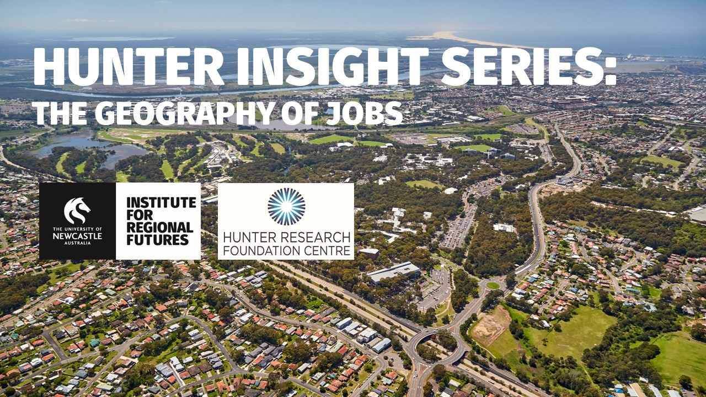
For the first time, knowledge-producing jobs in Newcastle and Lake Macquarie, such as those in the professional and information services, outnumber goods generating jobs, like manufacturing and mining. The Hunter’s changing employment profile highlighted an urgent need to focus planning and investment towards building cross-sector human capital.
In this presentation, we provide the background to the second Hunter Insight Series, presented at the University of Newcastle in May 2023.
Introduction:
This work leverages the decades of data, knowledge, and insights afforded by the Hunter Research Foundation (HRF)as part of the Hunter Insight series. Here the focus is on the evolving geography of jobs and its crucial role in shaping planning policies within the Hunter region.
We’ll look at some of the current spatial and sectoral characteristics of the Hunter’s workforce and consider some key lessons from around the globe about the potential challenges certain trends pose for the Hunter. We will also highlight areas to focus on that can enable our distinct, yet inextricably connected communities to thrive, wherever they are in the region.
Labour Markets to LGAs:
Firstly, we need to understand the different statistical geographies relevant for the Hunter.
The Census Data and other datasets produced by the ABS are underpinned spatially by Statistical Areas (SAs). Of these, we’ll be looking at data for SA Level 4 geographies – these are the largest sub-state regions and have been designed to represent labour markets, or groups of labour markets.
There are 107 SA4 regions in Australia, 3 of which cover the Hunter as it is defined in the Hunter Regional Plan 2041, but, as you can see by the map below, these don’t line up with Local Government Area boundaries.
Also because we’re leveraging the Hunter Research Foundation’s time series, today we’ll be looking only at the data for the SA4 covering the Newcastle and Lake Macquarie LGAs, and the blue SA4 covering the rest of the Hunter excluding most of the MidCoast LGA.
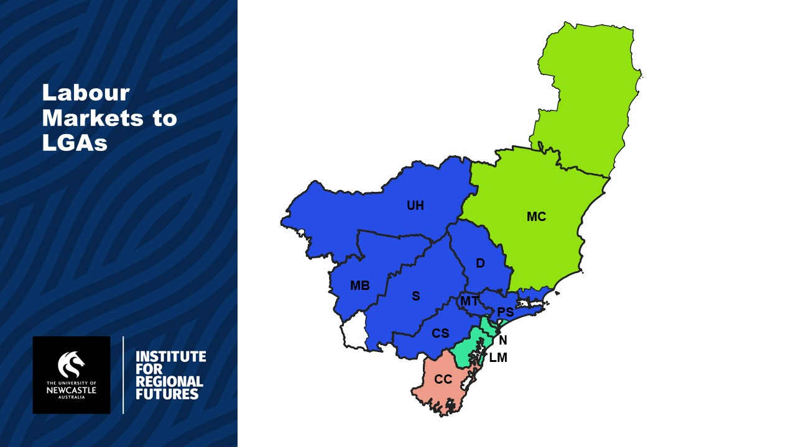
Unemployment:
Most recently, our unemployment rates have been at record low levels, dropping from about 9% at the middle of the pandemic, we have now been below 4% for almost a year.
Remarkably, in the mining areas of the Hunter this got down to less than 2.5% at the end of last year.
The 4% benchmark shown in This graph below is an indicator of ‘effectively zero’ unemployment, or the healthiest an economy can get.
Regionally, we are in a strong place, employment-wise.
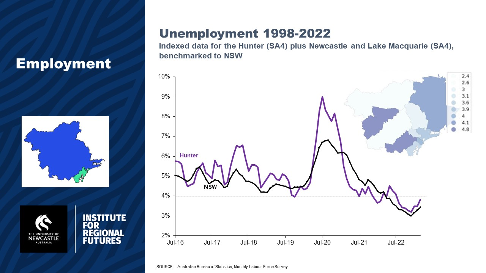
Employed Persons:
The graph below shows the long-term employment trends of the region compared to NSW. It illustrates the Hunter’s strong level of employment resilience.
This resilience stems from a sectoral structure that is uniquely diverse when compared with other regions in Australia. On top of a strong historical base in resources and manufacturing, we also have established and strong capabilities in education, tourism, health, and defence.
Hidden in the data here are the lived experiences of different economic shocks, like the closure of BHP in 1999 and more recently, the pandemic. The trendline doesn’t fully describe the day-to-day experience those events had on people around the region, but collectively they demonstrate an ability to manage change and move forward stronger.
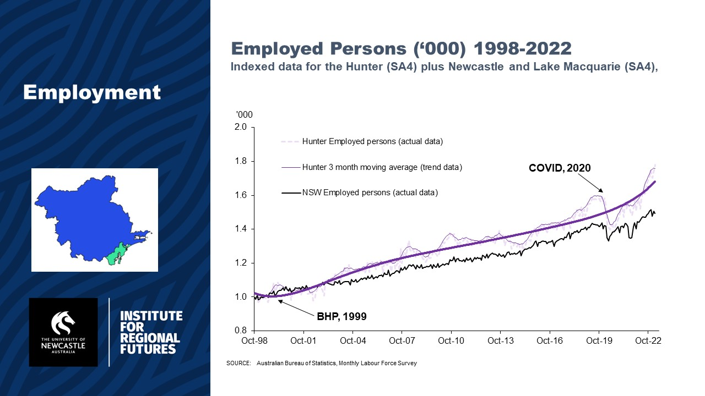
Long-Term Structural Change:
The graph below shows the change in employment sectors in the Hunter over the last decade. The figure shows10-year data because it provides a clear picture of what has been a slow but steady shift of decline in sectors that still are central to the Hunter’s identity – mining, manufacturing, and agriculture, and an upward shift in in service-related jobs.
This long-term structural change can still experience short term fluctuations, for example recent spikes in mining jobs in 2017/18 and troughs in education jobs during COVID. But the long term shift is clear, and continuing.
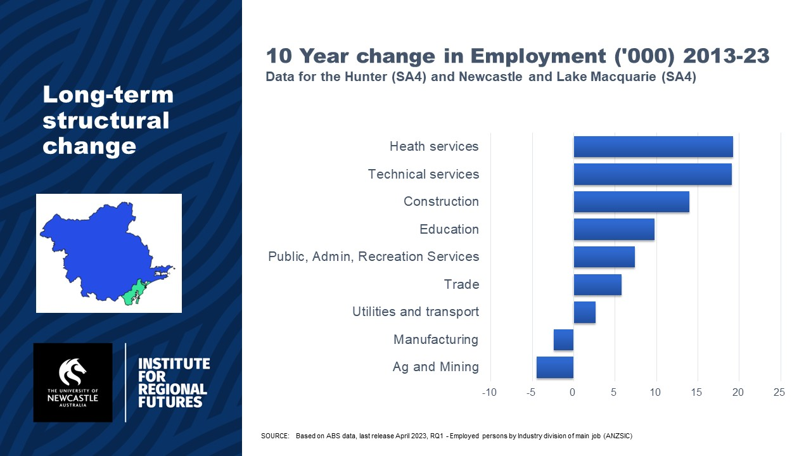
Regions are Diverse and Unique Places:
The Hunter is emblematic of challenges facing regional development globally.
Research from around the world describes global shifts in employment and trends that are reshaping the geography of jobs. This is an important influencer of investment decisions for: households – where we choose to live, businesses – where we choose to locate, the flow of goods to target market, and the infrastructure underpinning everything. It is in this way that the geography of jobs shapes the formation and function of cities.
Internationally, the global financial crisis started the shift, although that wasn’t felt acutely here in Australia.
But COVID was the earthquake that radically transformed work/life decisions – here and around the world. This shift was thought to be a panacea for populating regions and there was a lot of speculation about the decline of large capital cities and the rise of regional Australia.
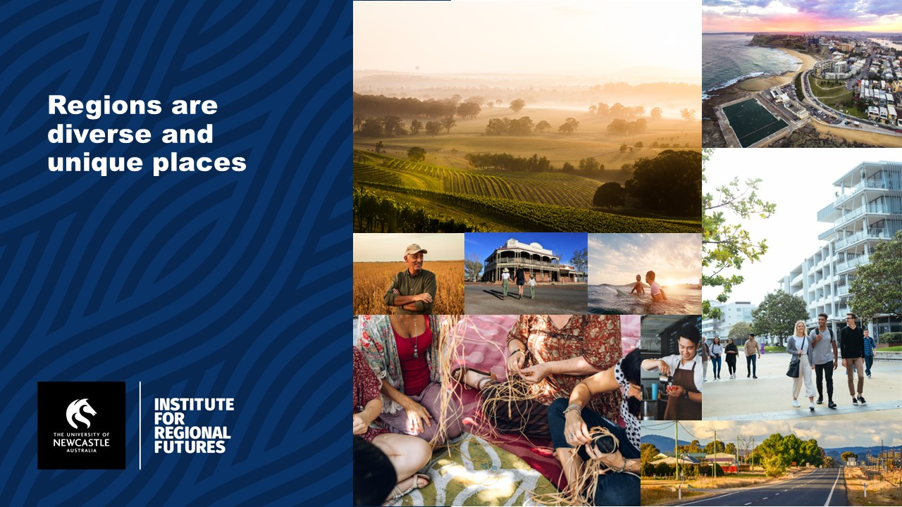
Housing:
What better way to examine population shift than housing?
While we did see a move towards nearly every region across the country, we are now seeing that not every person decided to make regions their home.
The cliff in the vacancy rates here show’s people relocating to the Hunter and the Central Coast during the pandemic. While we won’t have time to go into depth on this topic today, the difference in the rates of recovery between the two regions is important – the Hunter was a high-demand, supply-driven market area before the pandemic, and we continue to be an attractive place to choose today.
In combination with extremely low levels of employment, and a high rate of job vacancies still to fill, this is a problem we will need to fix quickly.
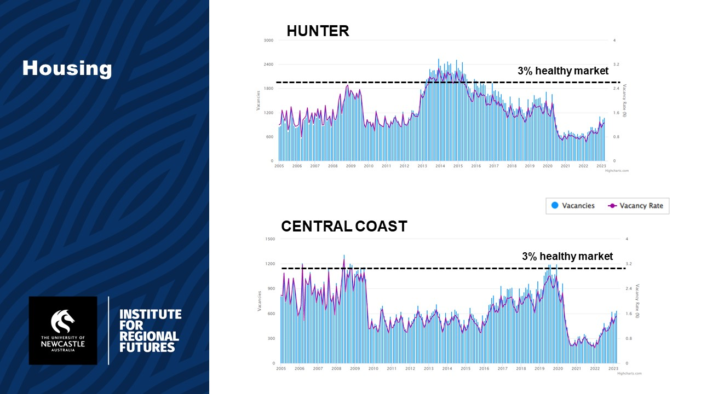
Regions Matter:
It was during COVID that the Institute for Regional Futures launched Regions Matter – a national research program exploring what makes regional places attractive.
This is a survey-based piece of research with national coverage, providing us insights from over 3,000 households. We sampled three Capital Cities – Brisbane, Sydney, and Perth – and 18 regional areas across NSW, QLD, VIC, and TAS.
For the Institute, this allows us to complement the Hunter Research Foundation economic data with social research, giving us insights relevant to policy advocacy across the environmental, cultural, and local government domains.
It allows us to understand community sentiments around major agenda-setting issues like the importance of place and belonging, reasons for moving or staying put, and hopes and fears for the future.
On one hand, the Regions Matter data tells us what we probably already know intuitively. People have an almost romantic view of regions as more affordable, freer, and socially connected places to be in theory, but hesitate on practical things like job prospects, pay levels and the notion that they won’t fit in.
And, perhaps the timing of our survey – preceded by fires, plagues, and floods has captured the idea that regions are dangerous places to live.
Worryingly, only a quarter of people surveyed felt government was steering us towards a better future.
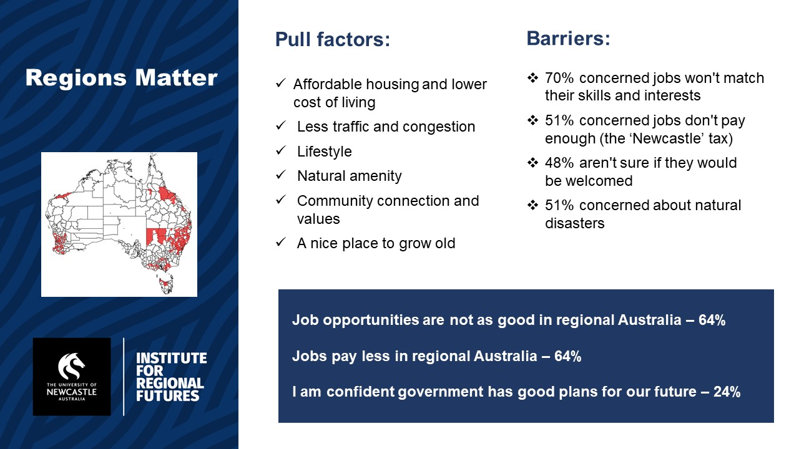
Long View:
If you watched Back to the Future and giggled at what 2020 looked like in the 1980s, this one is for you. Reports prepared by the Hunter Research Foundation and Deloitte Access Economics twently years ago had these predictions for 2010-2020ish period.
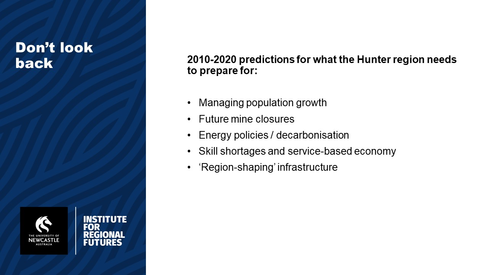
Look familiar?
It may seem like we’re running at full-pelt at the moment, but certainly can’t say we weren’t aware of some of the challenges we’re now facing. It’s certainly a different perspective when it’s a lived experience rather than a crystal ball idea.
Back then, we were advised to find solutions to manage expected population growth, prepare for eventual mine closures, be aware an emerging skills shortage in the context of the increasingly service-based economy, identify our local responses to anticipated changes in energy policies and the eventual decarbonisation of economies around the world, and figure out how to make the most of ‘region-shaping’ infrastructure – which, at the time was the roll out of the NBN and the soon-to-open Hunter Expressway.
All of these are still front of mind (including the Hunter Expressway and NBN), and many are now the subject of exciting new agendas but we don’t have much – or in some cases – any understanding or examples of how that will play out in our day-to-day practice.
What these still-relevant predictions say is that we have been going through this structural shift for such a long time that we don’t even notice it anymore. Kind of like how many of us felt when we tried to put our work clothes on again for the first time after lockdown.
Post COVID, we really are in unchartered territory. We can no longer rely confidently on looking back in order to visualise our future.
In the Hunter, regional planning previously hinged on a physical asset: coal mine, manufacturer, viticulture, university, hospital. The good jobs that flowed from these assets could be monitored, projected, planned around. These, we are familiar with.
Increasingly, the world is moving away from a physical capital based-economy to a human capital based-economy. People are fickle right? They can and do change jobs and homes so monitoring, evaluating, and planning around this new type of economy is far more difficult.
There is no one ‘right planning’ solution – in fact there are a multitude of possible futures for our region - the consequences ‘wrong planning’ could be devastating for some, simply based on their postcode.
US as a case study
Enrico Moretti is a researcher in the fields of labour economics and urban economics and is a Professor of Economics at the University of California in Berkeley.
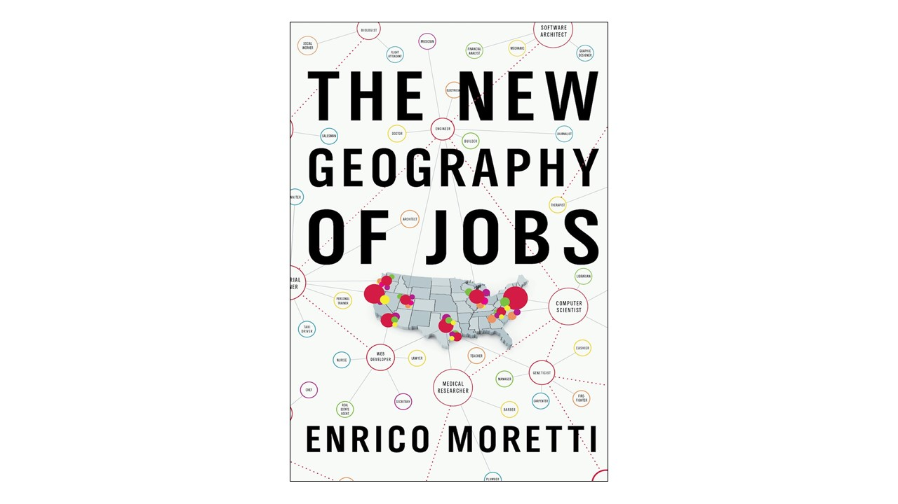
In his book The New Geography of Jobs, Moretti posits that there are three Americas.
At one extreme are the brain hubs with a well-educated labour force and a strong innovation sector. Their workers are among the most productive, creative, and best paid on the planet.
At the other extreme are places once dominated by traditional manufacturing, which are declining rapidly, losing jobs and residents.
In the middle are several cities that could go either way.
For the past 40 years, the three Americas have been growing apart at an accelerating rate causing growing geographic disparities across all aspects of life, from health and longevity to family stability and political engagement.
But the winners and losers aren’t necessarily who you’d expect. Moretti’s research shows that you don’t have to be a scientist or an engineer to thrive in one of these brain hubs.
Among the beneficiaries are the workers who support the ‘idea-creators’—the carpenters, hair stylists, personal trainers, lawyers, doctors, teachers and the like. Moretti has shown that for every new innovation job in a city, five additional non-innovation jobs are created, and those workers earn higher salaries than their counterparts in other cities.
Dealing with this split—supporting growth in the hubs while arresting the decline elsewhere—is a key challenge.
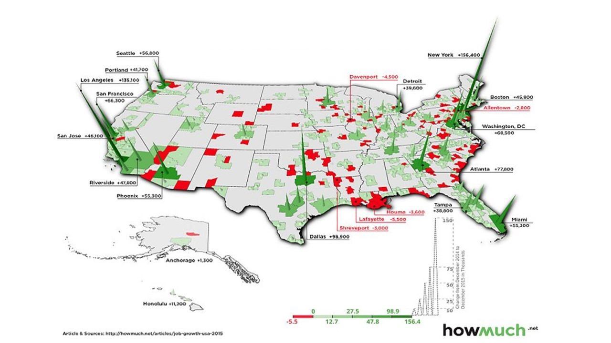
Changing employment structure in the Hunter
The Hunter is unique in Australia because it has all of these features layered over each other in a concentrated geographic area.
The current mindset of planning and policy are more familiar with place-based interventions around physical assets. It’s easy to see progression of mining up the Hunter Valley and the continual export via the Hunter Valley Coal Chain network and Port of Newcastle, underpinned by specialist mining service hubs along that corridor.
For decades we’ve been watching the gradual nudge of the region’s labour market away from goods producing towards knowledge producing activities.
This figure below shows, for the Hunter excluding Newcastle and Lake Macquarie SA4, the stead downward trend in goods-producing jobs like mining and manufacturing and knowledge-producing jobs since 1999. Here (and in later figures) knowledge jobs are defined as Information, Media and Communications; and professional, scientific, and technical services.
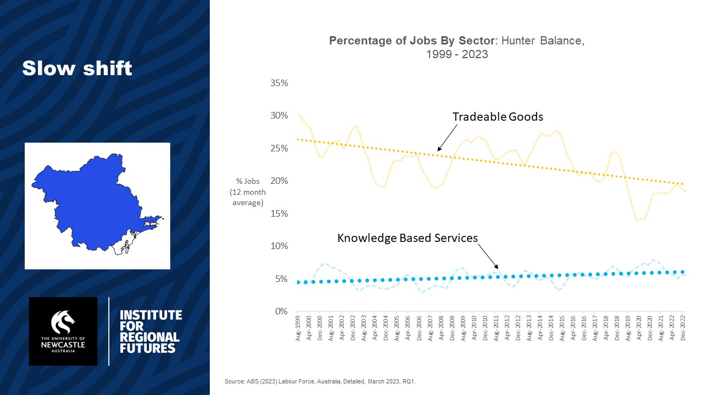
This next figure below shows a different pace of change in the Newcastle and Lake Macquarie SA4, which this year, for the first time has finally reached a crossing point which will shape our next chapter. For the first time Newcastle and Lake Macquarie have more people in knowledge industries than goods industries.
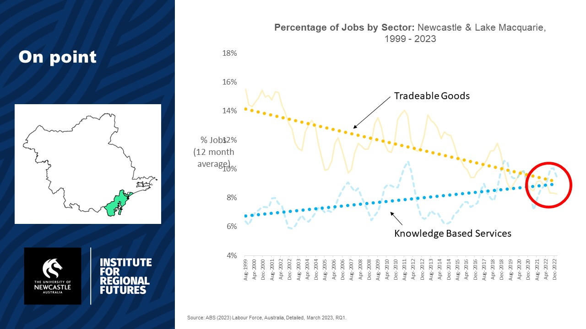
The figure below visualises the change in goods-producing jobs like mining and manufacturing (shown in orange) and knowledge-producing jobs (shown in blue) between 2011 and 2021 by LGA.
Why is this important? Because it suggests we now need to focus on curating a different kind of economy, one that allows businesses to ‘agglomerate’. This takes us from being an area where smart people live to an area that is leveraging innovation to drive productivity. It’s the productivity as opposed to the availability of jobs that provides a collective social and economic lift.
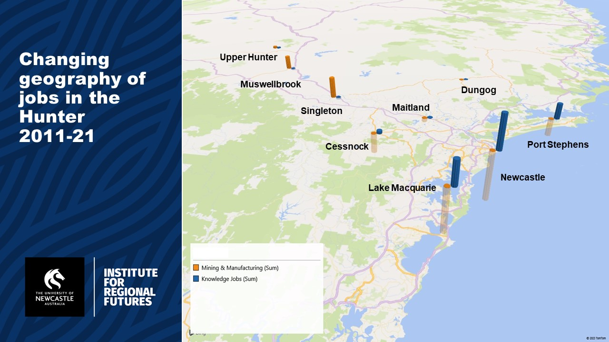
Moretti’s three forces of attraction
Moretti describes three forces of attraction to create an innovation economy – that is, the pull-factor a business has on attracting other businesses. These are: - Labour market thickness - The presence of an ecosystem for innovation - Knowledge spillovers.
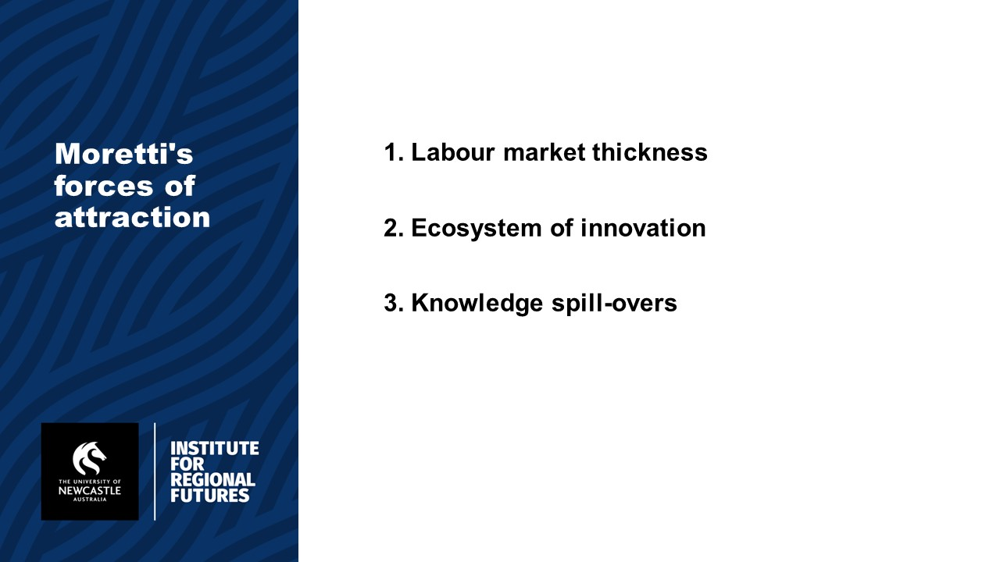
High skill knowledge jobs
We know that people with higher education levels have more ability to move. This tends to be around jobs. Regions Matter research reinforces this.
A thick labour market is on that has the depth and diversity to appeal to households at any stage of life.
We currently have a diverse base of potential jobs to choose from, but not a thick labour market by comparison to Capital Cities, but Newcastle and Lake Macquarie pull out in front of all regional areas across Australia.
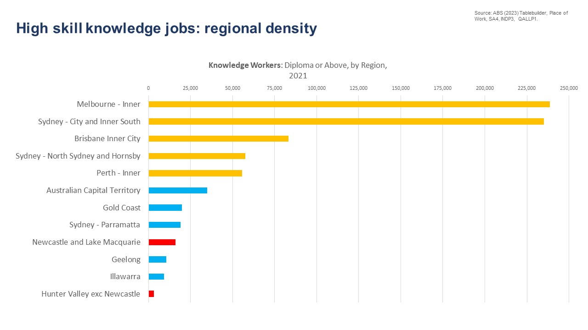
High skill knowledge jobs
We certainly see, geographically, the agglomeration factors happening in the more urbanised Greater Newcastle / Lower Hunter area, namely in Newcastle and Lake Macquarie.
What we lack in depth across the Region, we make up for in anchors available to the Region – a sea port, airport, uni, hospital and more recently, Australia’s largest customer-owned banking system. Each of these is re-positioning itself in its own way today.
Policy / planning challenge for the Hunter: How do we create greater depth in the labour market to attract and build knowledge powerhouses?
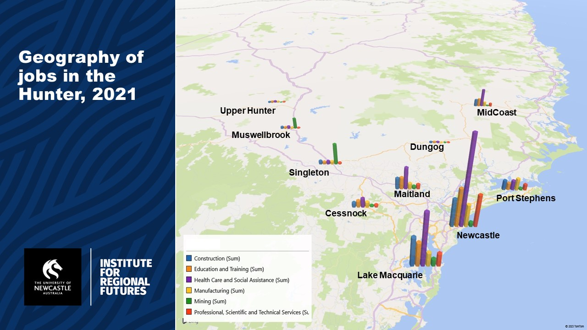
Moretti’s three forces of attraction – 2. Ecosystem
Moretti’s second force of attraction is the presence of an innovation ecosystem. Where successful places are experiencing decline, it is essential to keep this alive because it can be re-positioned but it can’t be recreated from scratch.
The ecosystem includes finance/funding, legal support, tech and management consulting, and as required logistics, repair, engineering.
Some lament the growing dominance of the services sector but these are the workers who support the ‘idea-creators’.
And the third force of attraction is knowledge spillover – which is inextricably tied to place.
Anecdote: Moretti’s research showed that for every academic citation, researchers more likely to cite researchers they know rather that someone on other side of world.
The Hunter has an established, robust environment for networking and knowledge exchange – across whole community.
Especially, higher opportunity for anchors to engage in this way.
Anecdote: Soccer example – and importance of local-level profiles (e.g., Merewether v Wallsend)
Policy / planning challenge for the Hunter: How do we harness and build this strength to support the creation of a deeper labour market?
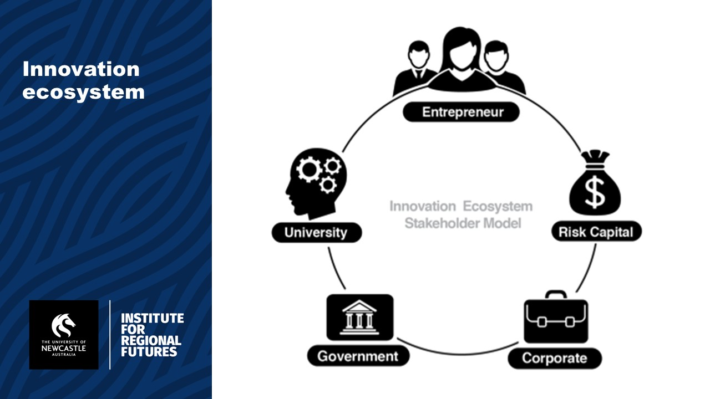
Where to from here?
We have existing strengths in the Hunter: defence, energy, health, education.
A lot of good work has been done to acknowledge/validate the region’s specialisations (existing and emerging) – now we need to get into the specific needs of businesses.
Case Study: Energy
There’s a constant local refrain that there is little information on ‘what the jobs are’ in new energy. But there is detailed analysis, and a skills shortage that is starting to constrain the pace of the renewable energy build out.
So why is it hard to visualise what these jobs are? The simplest reason is that most of the best resource, and the jobs, associated with the first part of the energy transition – building lots of renewables – is somewhere else. It’s happening in North Western and Western NSW, but we can’t see it from here.
This figure below shows, locationally, the locations of the Renewable Energy Zones announced for NSW overlayed on where coal mining jobs have traditionally been. On the right, the low resolution graphs (sorry), give us forecasts in the employment expected by technology (utility batteries in purple, wind in green, and solar in red) on the top right, and on the bottom showing forecasted jobs by project phase.
The opportunities for the Hunter will come, but generation builds will happen in the most prospective resource areas first. And the sectors where our competitive advantages are strongest – manufacturing, hydrogen, and offshore wind – are subject to intense competition and are essentially the second or third stages of the transition.
That gives us time to build the skills and ecosystem, if we are clever and deliberate.
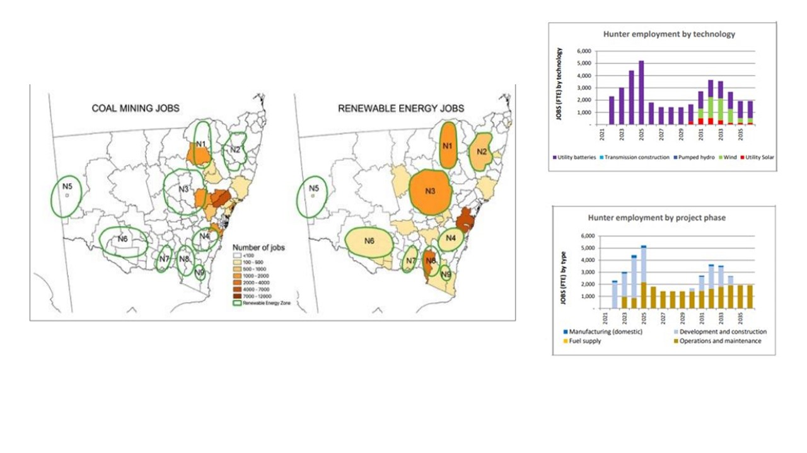
Case Study: Energy
The other obvious reality that is now increasingly being discussed is that the skills requirements will change as the economy responds to net zero imperatives.
A recent report by a collaboration between CSIRO, major industrial emitters and climate analytics organisations lays this out starkly. As the chart shows, we’ll need a lot more electricians, and a lot less miners, by 2050.
The risk of blind pursuits of specialisations at the neglect of all else is that we stifle opportunity by putting all of our eggs into a limited number of baskets.
Labour demand can be created around producing goods. But you can only see a cluster emerging in hindsight.
Anecdote: ‘Big push’ initiatives – e.g., Freemont, California’s answer to Detroit – following their shock managed to grow ‘green shoots’ in solar panels. People said you couldn’t throw a frisbee in Freemont without hitting a solar company. But all it took was the main solar employer to back a technology that didn’t take off and the entire cluster evaporated.
When we think about physical assets as anchors we need to ask: - Is the company going to succeed on its own? - Is the industry going to create a thickness in the labour market? - Will it create an ecosystem around it? - Will it create knowledge spill over so other companies will be attracted to the region?
This example is a challenge for highly capable venture capitalists, yet we expect policy makers to do this with public money. Often this manifests as competition between regions or local areas within regions for talent, funding, and other resources. Hyper-competition often causes us to lose sight of the ultimate outcome (seeing the forest for the trees).
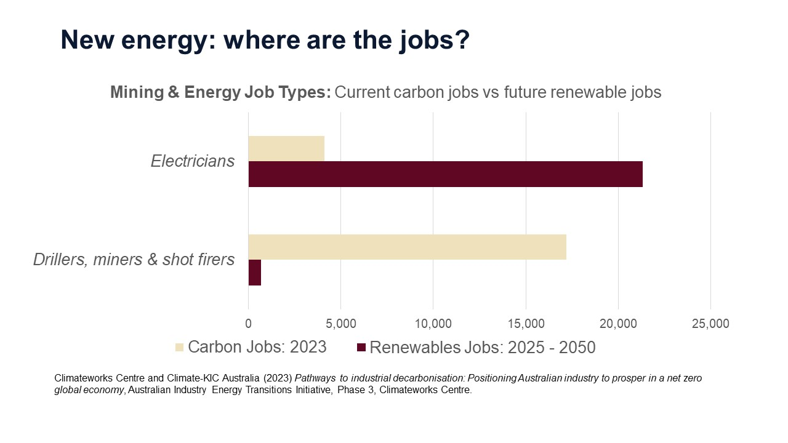
Region re-shaping
We’ve now planned and nation-built our way into a new possible future, but everything hinges around what we hang off the places we’ve picked.
This figure below shows some very important places around NSW in their own right. For our part of the story, we’ve got an established artery (shown in yellow) with the world’s most efficient system exporting coal as a critical ongoing economic engine.
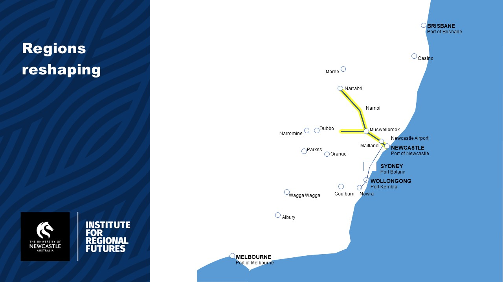
Region re-shaping
This figure below shows the new land-based planning initiatives, underpinned by major public investments in infrastructure. The Grey boxes are our Special Activation Precincts, and the orange are Renewable Energy Zones.
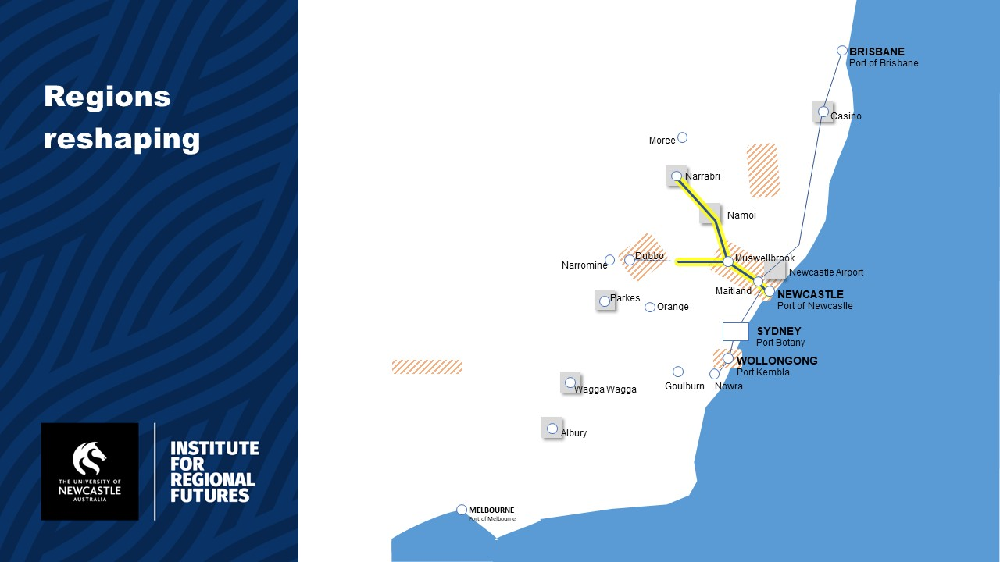
Region re-shaping
And below we see the rail connections being constructed right now. This is an amazing physical framework for growth. But it also now creates a new playing field for competition.
How do we focus policy design around human capital in a way that makes sense for all of us in the long run, rather than a few of us right now?
Big push doesn’t work for human capital because it is harder to ‘see’ in monitoring and evaluating success (can’t manage what you can’t measure)
Ireland, Israel and Taiwan have made this shift and all exhibited measurable success with a big push to building their human capital – these are exceptional cases but tell a story around the power of investing in people.
Instead need to invest in a way that makes it safe to try and fail – e.g., research, partnerships, living labs, etc. all of which we have in the Newcastle / Lake Mac geography.
Region re-shaping
But government policy design is based around ‘planning boundaries’ – all agencies have these and I’m just going to pick on planning boundaries.
This figure below shows the evolution of regional planning boundaries since the first suite of Regional Strategies and Regional Strategic Land Use Plans were introduced. These documents are important because they focus energy and investment on places.
Over the last two decades, the Hunter has been three, then one, and now two ‘regions’ for the purpose of implementing planning responses to government policy.
The Six Cities region concept offers opportunities for the Hunter that we have never seen before. As planning takes shape, it will bring the Lower Hunter with it.
The data tells us that the Newcastle Lake Macquarie area is already pulling ahead in terms of economic shifts. Lessons from elsewhere show us there is a real potential to amplify and widen the disparity between the lower Hunter and the rest of the region if we don’t proactively plan to mitigate this.
The type and timing of policy decisions in this geography will need to acknowledge the type and timing of policy decisions in the rest of the Hunter – and acknowledge that, from a labour market / social perspective, this ‘outer frame’ is inextricably linked to the rest of the Hunter.
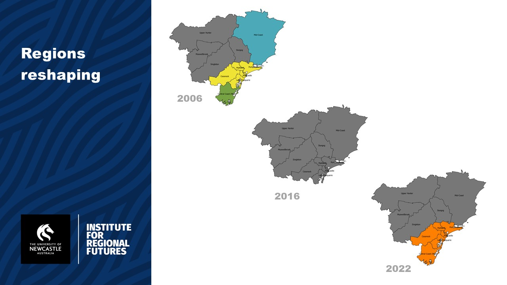
Key Takeouts
We need an agreed framework for different policy responses that meet the needs of different parts of the Hunter:
Brain Hub – to boost an already thriving ecosystem that underpins innovation in key sectors through investment in research, partnerships, etc.
Declining manufacturing – we have already lost ecosystems to sustain physical anchors. Big push initiatives around these assets may still work – but it’s always a gamble between it being a temporary crutch or a jump start for an economy.
Places that could go either way – need to be nurtured to sustain and pivot the remnants of any ecosystem before it’s lost. Revitalisation areas
Necessity is the mother of invention. Innovation happens because we need it to. The Hunter is so unique in so many ways that it has historically been the testbed for new ideas. One of its unique characteristics is that it’s not a Capital City but it’s also set apart from all other regions in Australia. Let’s make it a test bed for policy innovation to drive planning excellence.